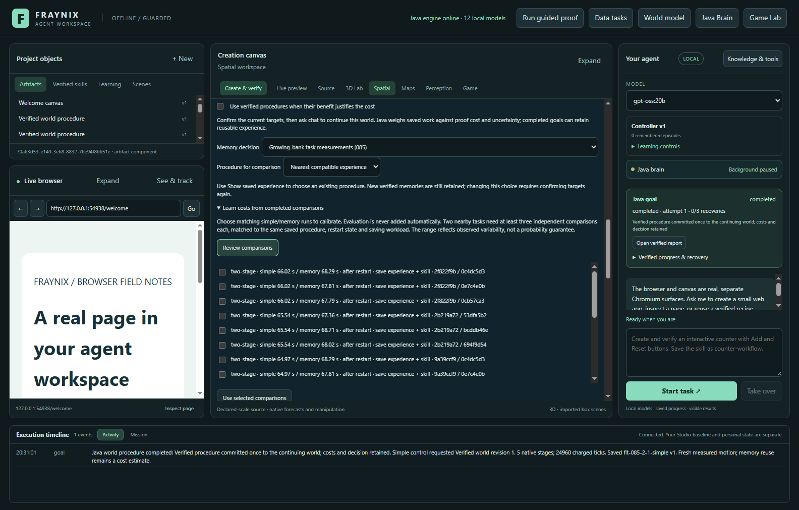
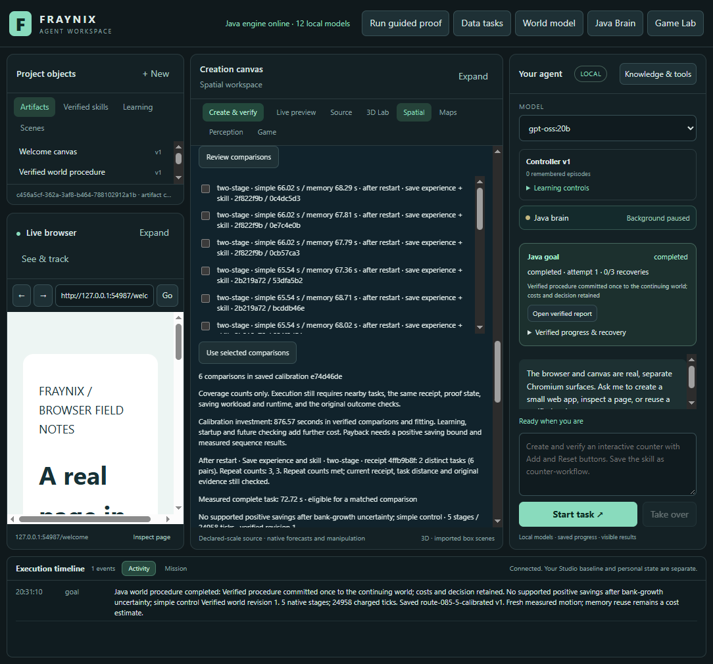
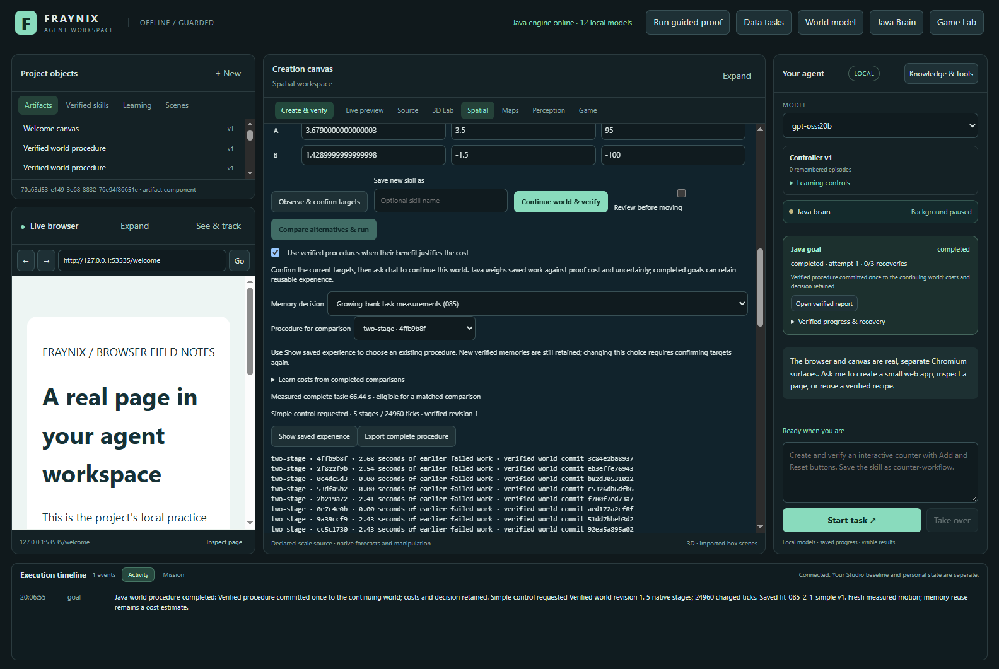
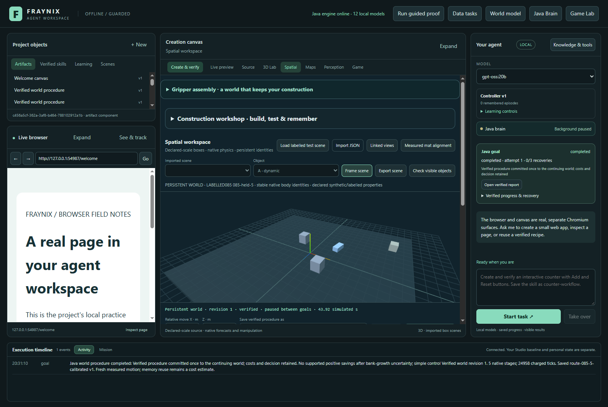
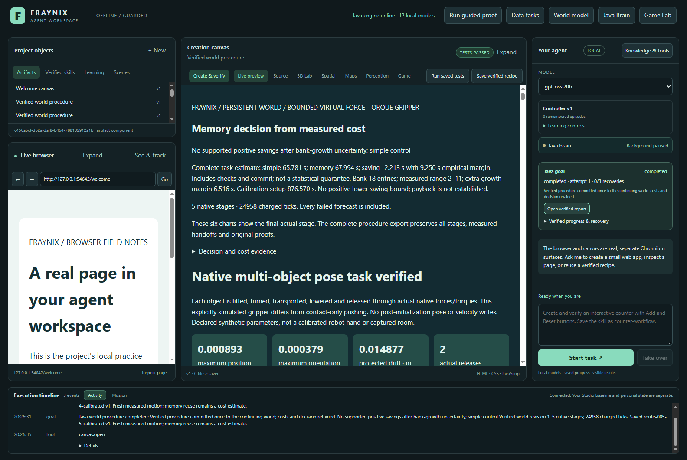

Keep the memory.
Count the work.
An evolving memory bank, an exact verified procedure, and the full cost of calibration. These are actual retained outcomes and measured task sequences.
Coverage with the checks intact
Four logical Java processors and a 768 MiB heap; fixed Windows affinity. Cold means a new owner before an uninterrupted task. Experience retention and skill saving are enabled in calibration and evaluation. Each branch keeps its own growing memory bank. Interrupted timings remain excluded. These are labelled simulations, not new camera measurements.
Prediction versus completed work
Estimates are compared against actual simple and explicit-memory controls. The calibrated control also pays for loading and checking its model. Complete goal time includes native work, verification, the report, commit and requested saving; final timing-write and transport are outside it. Learning, startup and reopening costs are retained separately. Empirical intervals are not statistical confidence guarantees.
Does calibration repay its setup?
Every control starts from the same closed prepared copy and keeps its own new experiences. The accounting view charges calibration only to calibrated selection; optional learning is charged to memory and calibrated selection. These are accounting comparisons over measured runs, not additional executions from empty projects. The launch option also charges actual seed/calibration and per-goal owner launches; validation-only reopening remains separate. No claimed repayment beyond the six-task horizon.
Replay original motion
A top-down point projection of retained native positions. Display frames are subsampled; all original samples remain in the evidence archive. This is recorded motion, not a new simulation.
Evidence informs the decision
Complete source inventory
The actual application









